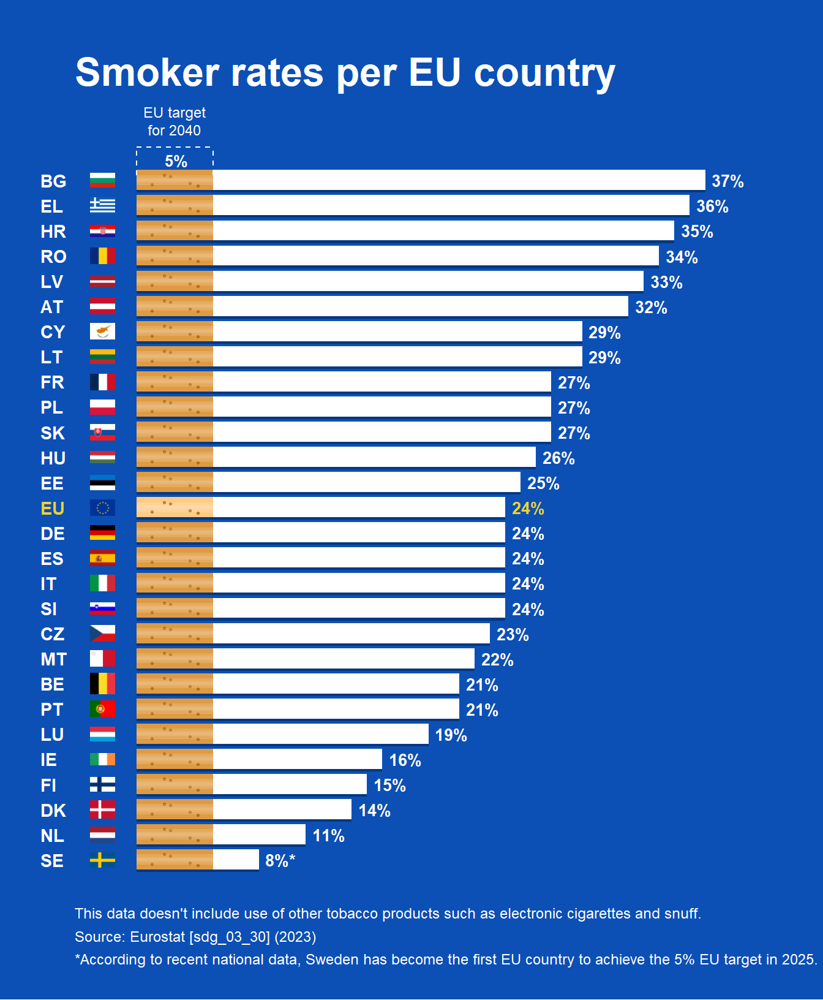

# ==============================================================================
# RECREATING THE EUROPEAN PARLIAMENT SMOKER RATES INFOGRAPHIC IN R
# ==============================================================================
# 1. Load required libraries
library(ggplot2)
library(dplyr)
library(ggimage) # Handles native rectangular image drawing in ggplot2
# 2. Build the Dataset
df <- data.frame(
country = c("BG", "EL", "HR", "RO", "LV", "AT", "CY", "LT", "FR", "PL", "SK", "HU", "EE",
"EU", "DE", "ES", "IT", "SI", "CZ", "MT", "BE", "PT", "LU", "IE", "FI", "DK", "NL", "SE"),
rate = c(37, 36, 35, 34, 33, 32, 29, 29, 27, 27, 27, 26, 25,
24, 24, 24, 24, 24, 23, 22, 21, 21, 19, 16, 15, 14, 11, 8),
is_eu = c(rep(FALSE, 13), TRUE, rep(FALSE, 14))
)
# Fix the factor ordering so BG stays at the top of the flipped chart
df$country <- factor(df$country, levels = rev(df$country))
# Map country codes to high-quality rectangular PNG flag assets from flagcdn
df <- df %>%
mutate(
y_idx = as.numeric(country),
flag_code = tolower(as.character(country)),
# Convert EU's 'EL' to standard ISO 'gr' for Greece
flag_code = ifelse(flag_code == "el", "gr", flag_code),
# Source crisp rectangular PNGs uniformly from flagcdn to prevent hotlinking bans
flag_url = case_when(
flag_code == "eu" ~ "https://flagcdn.com/w40/eu.png",
TRUE ~ paste0("https://flagcdn.com/w40/", flag_code, ".png")
)
)
# Extract a specific color vector for the standard text Y-axis labels (Yellow for EU)
y_axis_colors <- ifelse(levels(df$country) == "EU", "#ebd234", "#ffffff")
# 3. Create the Structured Filter Pattern
# (x_rel = depth into the orange filter 0-5, y_rel = vertical height within the bar)
fixed_pattern <- data.frame(
x_rel = c(1.0, 2.2, 3.5, 1.8, 4.0),
y_rel = c(-0.18, 0.15, -0.12, 0.20, -0.22)
)
# Expand the uniform dot matrix identically across all rows
dots_df <- df %>%
group_by(country) %>%
do({
data.frame(
dot_x = fixed_pattern$x_rel,
dot_y = .$y_idx + fixed_pattern$y_rel
)
}) %>%
ungroup()
# 4. Build and Render the Plot
p <- ggplot() +
# --- CIGARETTE FULL LENGTH SHADOW ---
# Smooth out the drop shadow by dropping its alpha slightly and expanding it
geom_col(data = df, aes(x = country, y = rate),
position = position_nudge(x = -0.09), fill = "#042c66", width = 0.82, alpha = 0.7) +
# --- CIGARETTE FILTER BASE ---
# Evaluates dynamically: uses a lighter premium orange (#ffcb85) for the EU row, and standard orange (#df9b43) for the rest
geom_col(data = df, aes(x = country, y = 5, fill = ifelse(country == "EU", "#ffcb85", "#df9b43")), width = 0.80) +
scale_fill_identity() +
# --- CIGARETTE FILTER DOT TEXTURE ---
geom_point(data = dots_df, aes(x = dot_y, y = dot_x),
color = "#aa6710", size = 0.6, alpha = 0.8) +
# --- CIGARETTE WHITE BODY ---
geom_col(data = df, aes(x = country, y = rate - 5), position = position_nudge(y = 5), fill = "#ffffff", width = 0.80) +
# --- 3D ROUNDED CYLINDER HIGHLIGHTS ---
# By overlaying stacked, progressively narrower, semi-transparent white bars along the center of the columns,
# we break up the flat look and create a smooth, reflective 3D cylindrical lighting effect.
geom_col(data = df, aes(x = country, y = rate), fill = "#ffffff", alpha = 0.15, width = 0.40) +
geom_col(data = df, aes(x = country, y = rate), fill = "#ffffff", alpha = 0.10, width = 0.20) +
geom_col(data = df, aes(x = country, y = rate), fill = "#ffffff", alpha = 0.08, width = 0.08) +
# --- RECTANGULAR COUNTRY FLAGS ---
geom_image(data = df, aes(x = country, image = flag_url), y = -2.2, size = 0.028, asp = 1.2) +
# --- DATA LABELS ---
geom_text(data = df, aes(x = country, y = rate, label = paste0(rate, ifelse(country == "SE", "%*", "%")),
color = is_eu),
hjust = -0.2, fontface = "bold", size = 3.5) +
# --- TARGET BRACKET INDICATOR ---
geom_segment(aes(x = 29.3, xend = 29.3, y = 0, yend = 5),
color = "#ffffff", linetype = "dashed", linewidth = 0.4) +
geom_segment(aes(x = 28.2, xend = 29.3, y = 0, yend = 0),
color = "#ffffff", linetype = "dashed", linewidth = 0.4) +
geom_segment(aes(x = 28.2, xend = 29.3, y = 5, yend = 5),
color = "#ffffff", linetype = "dashed", linewidth = 0.4) +
# --- TARGET LABELS ---
annotate("text", x = 29.8, y = 2.5, label = "EU target\nfor 2040",
color = "#ffffff", size = 3.2, fontface = "plain", hjust = 0.5, vjust = 0, lineheight = 1.0) +
annotate("text", x = 28.7, y = 2.6, label = "5%",
color = "#ffffff", size = 3.4, fontface = "bold", hjust = 0.5, vjust = 0.3) +
# --- PLOT CONFIGURATIONS ---
scale_y_continuous(limits = c(-4, 42), expand = c(0, 0)) +
scale_color_manual(values = c("FALSE" = "#ffffff", "TRUE" = "#ebd234"), guide = "none") +
coord_flip(clip = "off") +
# Typography / Labels
labs(
title = "Smoker rates per EU country",
caption = "This data doesn't include use of other tobacco products such as electronic cigarettes and snuff.\nSource: Eurostat [sdg_03_30] (2023)\n*According to recent national data, Sweden has become the first EU country to achieve the 5% EU target in 2025."
) +
# --- THEME STYLING ---
theme_minimal() +
theme(
plot.background = element_rect(fill = "#0c50b5", color = NA),
panel.background = element_rect(fill = "#0c50b5", color = NA),
panel.grid = element_blank(),
# Title formatting
plot.title = element_text(color = "#ffffff", face = "bold", size = 24, margin = margin(b = 25, t = 10), hjust = 0),
# Caption formatting
plot.caption = element_text(color = "#ffffff", size = 9, hjust = 0, lineheight = 1.3, margin = margin(t = 20)),
# Axis formatting containing dynamic multi-color country text vectors
axis.title = element_blank(),
axis.text.y = element_text(color = y_axis_colors, face = "bold", size = 11, hjust = 0),
axis.text.x = element_blank(),
axis.ticks = element_blank(),
# Padding margins around the entire image structure boundary
plot.margin = margin(25, 25, 20, 25)
)
# Output image visualization to screen
print(p)